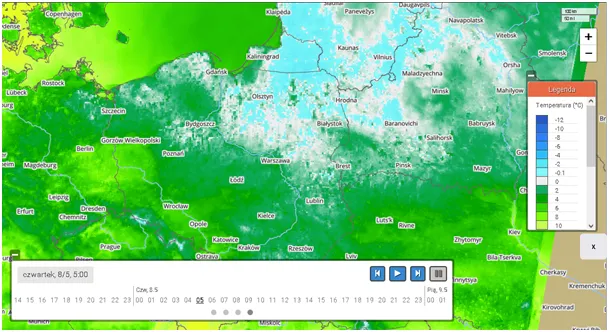
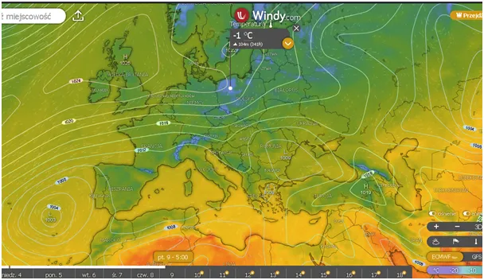
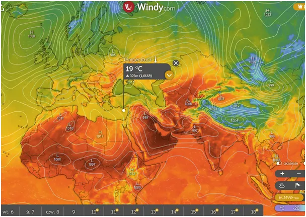
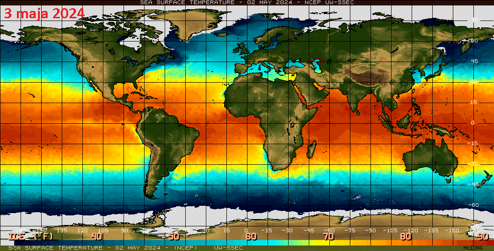
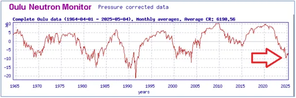

Atmosfera przechowuje tylko 1% ciepła naszej planety.
Pierwsza mapka to prognoza na czwartkowy świt , druga na piątkowy. Warszawski ICM, jeden z najlepszych ośrodków matematycznych, prognozuje przymrozki na wszystkie kolejne poranki dla północnej Polski.


Trzecia mapka to prognoza na dzisiejsze południe. 19 st. C w maju w południe w Nikozji na Cyprze to skutek deszczu i zimnego frontu z Rosji. który dociera aż do Egiptu. Z serwisów zniknęły ogniste mapki, szukam informacji "że się oziębia, bo się ociepla", ale bez skutku, pojawią się zapewne po kilku chłodnych dniach, dziś jeszcze trwa narodowa nirwana.

Mapka temperatur powierzchni oceanów jest bezlitosna. Atlantyk u wybrzeży Afryki chłodniejszy niż przed rokiem i jest to postęp kolejny sezon z rzędu.

W okolicach zwrotnika (Kuba) też chłodniej, co wróży kolejny rok ze spadkiem energii huraganów obserwowany od dwóch dekad https://pawelklimczewski.pl/2024/10/27/cyklony-i-slonce-postscriptum/
Morze Śródziemne chłodniejsze a Atlantyk w okolicach Europy też w bladych odcieniach. Pamiętajmy, że jesteśmy jeszcze na szczycie cyklu Słonecznego i promieniowanie kosmiczne jest bardzo słabe, przez co powstaje mniej chmur.

Najbliższe 5 lat to wzrost zachmurzenia i mniej ciepła w oceanach, a to one przechowują do 93 % ciepła naszej planety. Atmosfera zawiera zaledwie 1% ciepła i każdej nocy stygnie, aby kolejnego dnia pobrać z gruntu i wody ciepło, jakie znamy za dnia. Pozostałe 6% ciepła tkwi w lądach i pokrywie lodowej. W termodynamice używamy skali Kelwina, a ta jest zawsze dodatnia. Gdy woda zamarza ma 243,15 Kelwinów. Ważny tekst o mylącej w myśleniu o klimacie skali Celsjusza jest tu: https://pawelklimczewski.pl/2024/04/14/wariancja-kontra-wariactwo/
Fot. nad artykułem: Pyrocumulonimbus, chmura ognista, powstaje nad wielkimi pożarami i erupcjami wulkanów, eksplozjami bomby atomowej.
Paweł Klimczewski